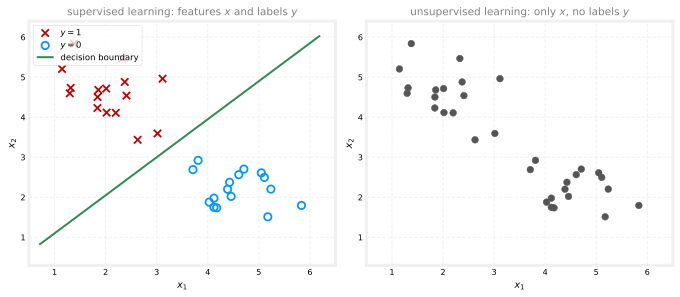
Clustering
machine-learning
unsupervised-learning
What clustering is, plus the full k-means algorithm, its distortion cost function, random initialization against local optima, and how to choose K.
What is clustering? A clustering algorithm looks at a number of data points and automatically finds data points that are related or similar to each other. It is the first unsupervised learning algorithm of this course. This page pins down what clustering means, then builds up the complete k-means algorithm, the cost function it optimizes, the random initialization strategy that avoids bad clusterings, and how to choose the number of clusters \(K\).
Supervised versus Unsupervised Learning
To see what makes clustering different, contrast it with the supervised learning seen throughout the earlier courses, say, binary classification. Given a dataset with features \(x_1\) and \(x_2\), supervised learning had a training set with both the input features \(x\) and the labels \(y\). Plotting such a dataset shows two classes, marked here as crosses and circles, and fitting a logistic regression algorithm or a neural network learns a decision boundary between them.
In unsupervised learning, the dataset comes with just \(x\) and not the target labels \(y\). Plotting it shows only dots, no crosses and circles, because there are no labels to distinguish them.
Because there are no target labels \(y\), it is not possible to tell the algorithm what the “right answer \(y\)” is that it should predict. Instead, the algorithm gets asked to find something interesting about the data, that is, some interesting structure in it.
Finding Clusters
A clustering algorithm looks for one particular type of structure. Given a dataset like the one on the right above, it tries to see whether the data can be grouped into clusters, meaning groups of points that are similar to each other. In this case, a clustering algorithm might find that the dataset is made up of data from two clusters.
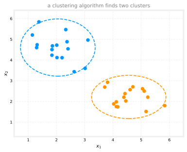
Applications of Clustering
Clustering shows up in a wide range of applications, several of which appeared briefly back in course 1’s introduction to unsupervised learning.
- Grouping similar news articles. Given many articles, group together the ones about the same story, like the panda story from course 1.
- Market segmentation. At deeplearning.ai, clustering learner data revealed that many learners come to grow their skills, or to develop their careers, or to stay updated on AI and understand how it affects their field of work. Discovering those groups helps serve each of them better, and anyone who does not fall into one of the clusters is welcome too.
- Analyzing DNA data. Looking at genetic expression data from different individuals and grouping together people who exhibit similar traits.
- Astronomical data analysis. Astronomers use clustering to group bodies in space for their analysis of what is going on out there, for example figuring out which bodies form one galaxy or which form coherent structures in space.
The next section looks at the most commonly used clustering algorithm, the k-means algorithm, and how it works.
Review Questions
1. What is the key difference between the training data for supervised learning and for unsupervised learning?
TipAnswer
Supervised learning gets both the input features \(x\) and the target labels \(y\), so the algorithm can be told the right answer to predict for each example. Unsupervised learning gets only \(x\), with no labels, so instead of predicting a known target, the algorithm is asked to find interesting structure in the data on its own.
1. In one sentence, what kind of structure does a clustering algorithm look for?
TipAnswer
It looks for groups of data points that are similar to each other, called clusters, so that the dataset can be organized into a small number of coherent groups.
1. Why is there no “decision boundary” in the unsupervised version of the plot?
TipAnswer
A decision boundary separates known classes, and learning one requires labels \(y\) to say which side each training example belongs on. With no labels, there are no classes to separate, and the algorithm’s job changes from separating given categories to discovering groupings in the first place.
1. Which of the following are applications of clustering mentioned here? (Choose all that apply.)
Grouping similar news articles together
Predicting house prices from square footage
Market segmentation of learners by their motivation
Grouping bodies in space to identify coherent structures such as galaxies
TipAnswer
a, c, and d, along with grouping people by genetic expression data. Predicting house prices (b) is a supervised regression problem, it needs labeled examples of prices, the target \(y\), which is exactly what unsupervised learning does without.
K-means Intuition
Here is what the k-means clustering algorithm does, illustrated on a dataset of 30 unlabeled training examples with the algorithm asked to find two clusters. (How to decide the number of clusters is covered in a later section.)
The first thing k-means does is take a random guess at where the centers of the two clusters might be. The centers of the clusters are called cluster centroids, drawn below as a red cross and a blue cross. The initial guesses are not particularly good, but they are a start. From there, k-means repeatedly does two different things.
- Assign points to cluster centroids. Go through every example, \(x^{(1)}\) through \(x^{(30)}\), and check whether it is closer to the red or the blue cluster centroid, then assign it, illustrated by painting each dot red or blue, to whichever centroid is closer.
- Move cluster centroids. Look at all the red points and take their average, and move the red cross to that average location. Do the same for the blue points and the blue cross.
With the new, hopefully slightly improved, centroid locations, the algorithm loops back to step 1, and because the centroids have moved, some points change color, a dot that used to be closer to the red cross may now be closer to the blue one. Then the centroids move again, and so on.
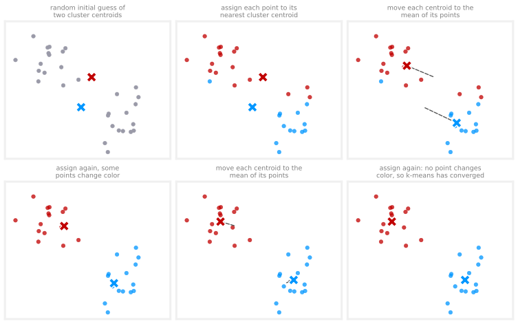
Keeping on repeating the two steps, look at each point and assign it to the nearest cluster centroid, then move each cluster centroid to the mean of all the points with the same color, eventually there are no more changes to the colors of the points nor to the locations of the cluster centroids. At that point the k-means algorithm has converged. These two conditions always arrive together, because they are locked to each other. If no point changes color, then each centroid keeps the same set of points and so its mean does not move, and conversely if no centroid moves, then every point keeps the same nearest centroid and so no color changes. That is why the final panel above can declare convergence just from a reassignment in which nothing changes color. In this example, k-means has done a pretty good job, it found that the points up top correspond to one cluster and the points at the bottom to a second cluster.
The next section formalizes this into the algorithm, with the mathematical formulas for both steps.
Review Questions
1. What are the two steps k-means repeats, and in what order?
TipAnswer
First, assign every point to its nearest cluster centroid (paint each dot the color of the closer cross). Second, move each cluster centroid to the average (mean) location of the points assigned to it. The algorithm alternates these two steps until nothing changes.
1. What is a cluster centroid, and where do the first centroids come from?
TipAnswer
A cluster centroid is the algorithm’s current guess for the center of a cluster. The first centroids come from a random guess, and they are usually not good guesses, the repeated assign-and-move steps are what improve them.
1. How does k-means know when to stop?
TipAnswer
It has converged when running the two steps produces no further changes, no point switches to a different centroid, and no centroid moves, because each centroid already sits at the mean of its assigned points.
1. A point was assigned to the red centroid on the first iteration but to the blue centroid on the second. How is that possible if the point never moved?
TipAnswer
The centroids moved. After the first averaging step, the red and blue crosses are in new locations, and distances get re-measured against those new locations. A point near the middle can be closer to red under the old positions and closer to blue under the new ones.
K-means Algorithm
Here is the k-means algorithm written out in detail, enough to implement it. It begins by randomly initializing \(K\) cluster centroids \(\vec{\mu}_1, \vec{\mu}_2, \dots, \vec{\mu}_K\). In the running example with \(K = 2\), this is the random placement of the red cross (centroid 1, so \(\vec{\mu}_1\)) and the blue cross (centroid 2, so \(\vec{\mu}_2\)).
NoteVector notation
Each centroid \(\vec{\mu}_k\) is a vector with the same dimension as the training examples. If each \(\vec{x}^{(i)}\) has \(n = 2\) features, then each \(\vec{\mu}_k\) is also a list of two numbers. The arrow marks a vector; the corresponding Python variables have no arrow. This follows the machine learning notation convention from earlier courses.
Having initialized the centroids, k-means then repeats the two steps from the intuition section.
Step 1: assign points to cluster centroids. For \(i = 1\) to \(m\) (every training example), set \(c^{(i)}\) to the index (from \(1\) to \(K\)) of the cluster centroid closest to \(\vec{x}^{(i)}\). “Closest” is measured by distance, written with the double-bar norm notation (also called the L2 norm), and it is more convenient to minimize the squared distance, which gives the same answer.
\[ c^{(i)} = \arg\min_{k} \; \lVert \vec{x}^{(i)} - \vec{\mu}_k \rVert^2 \]
For instance, if example \(\vec{x}^{(1)}\) is closest to the red centroid, set \(c^{(1)} = 1\), and if example \(\vec{x}^{(12)}\) is closest to the blue one, set \(c^{(12)} = 2\).
Step 2: move the cluster centroids. For \(k = 1\) to \(K\), set \(\vec{\mu}_k\) to the average (mean) of the points assigned to cluster \(k\). Averaging the assigned points’ first feature gives the new horizontal position, averaging the second feature gives the new vertical position, and so on for each feature.
\[ \vec{\mu}_k = \frac{1}{n_k} \sum_{i \,:\, c^{(i)} = k} \vec{x}^{(i)} \]
where \(n_k\) is the number of points assigned to cluster \(k\). For example, if cluster 1 has training examples \(1, 5, 6, 10\) assigned to it, then
\[ \vec{\mu}_1 = \frac{1}{4}\left( \vec{x}^{(1)} + \vec{x}^{(5)} + \vec{x}^{(6)} + \vec{x}^{(10)} \right) \]
and since each \(\vec{x}\) is a vector of \(n\) numbers, \(\vec{\mu}_1\) comes out as a vector of \(n\) numbers too.
Written together, the algorithm is:
NoteAlgorithm summary
Randomly initialize \(K\) cluster centroids \(\vec{\mu}_1, \vec{\mu}_2, \dots, \vec{\mu}_K\).
Repeat until convergence:
- Assign points. For \(i = 1\) to \(m\): set \(c^{(i)} = \arg\min_k \lVert \vec{x}^{(i)} - \vec{\mu}_k \rVert^2\)
- Move centroids. For \(k = 1\) to \(K\): set \(\vec{\mu}_k\) = mean of the points assigned to cluster \(k\)
Corner Case: An Empty Cluster
There is one corner case. What happens if a cluster has zero training examples assigned to it? Then the move step would try to average zero points, which is not well defined. The most common response is to eliminate that cluster, ending up with \(K - 1\) clusters. If you really do need all \(K\) clusters, an alternative is to randomly reinitialize that centroid and hope it picks up some points on the next round, but eliminating the empty cluster is more common.
K-means on Data That Is Not Well Separated
The examples so far had well-separated clusters, three visibly distinct blobs, say. But k-means is frequently applied to data where the clusters are not well separated. Suppose you design and manufacture t-shirts and want to decide how to size small, medium, and large. You collect data on the heights and weights of likely buyers, which vary continuously with no clear clusters. Running k-means with three centroids anyway groups the people into three groups, and the centroids suggest the most representative height and weight for each size.
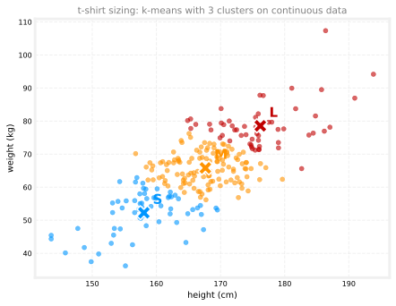
This is an example of k-means giving a useful result even though the data does not lie in well-separated groups. You would then size the small t-shirt to fit the people in one cluster, the medium for the next, and the large for the third.
That is the k-means clustering algorithm, initialize the centroids randomly, then repeatedly assign points to centroids and move the centroids. But what is the algorithm really doing, and will it converge or run forever? The next section shows that k-means is actually optimizing a specific cost function, which explains why it converges.
Review Questions
1. Write the two update rules of k-means. What does \(c^{(i)}\) store, and what does \(\vec{\mu}_k\) store?
TipAnswer
The assignment step sets \(c^{(i)} = \arg\min_k \lVert \vec{x}^{(i)} - \vec{\mu}_k \rVert^2\), so \(c^{(i)}\) stores the index of the centroid closest to example \(i\) (a number from 1 to \(K\)). The move step sets \(\vec{\mu}_k\) to the mean of all points with \(c^{(i)} = k\), so \(\vec{\mu}_k\) stores the location (a vector) of cluster \(k\)’s centroid.
1. Why does the algorithm minimize the squared distance \(\lVert \vec{x}^{(i)} - \vec{\mu}_k \rVert^2\) rather than the plain distance?
TipAnswer
Purely for convenience. The centroid with the smallest squared distance is always the same as the centroid with the smallest distance (squaring is monotonic for non-negative values), so the assignment is identical, and squared distance avoids computing a square root.
1. During the move step, one of the \(K\) clusters has no points assigned to it. What goes wrong, and what is the usual fix?
TipAnswer
The move step would average zero points, which is undefined. The most common fix is to eliminate that cluster and continue with \(K - 1\) clusters. If all \(K\) are required, the centroid can instead be randomly reinitialized in the hope of attracting points next round.
1. In the t-shirt example, the height and weight data has no clear separated clusters. Does that make k-means the wrong tool?
TipAnswer
No. k-means still partitions the continuous data into three groups and returns a representative centroid for each, which is exactly what is needed to choose small, medium, and large dimensions. k-means often gives useful results even when the data does not fall into visibly distinct clusters.
Cost Function for K-means
In the earlier courses, supervised learning algorithms took a training set, posed a cost function, and used gradient descent or some other algorithm to optimize it. The k-means algorithm also optimizes a specific cost function, although the optimization algorithm is not gradient descent, it is the two-step procedure already seen.
Recall the notation. \(c^{(i)}\) is the index (from \(1\) to \(K\)) of the cluster to which example \(\vec{x}^{(i)}\) is currently assigned, and \(\vec{\mu}_k\) is the location of cluster centroid \(k\). One more piece of notation ties them together: \(\vec{\mu}_{c^{(i)}}\) is the centroid of the cluster to which \(\vec{x}^{(i)}\) has been assigned. For example, \(\vec{\mu}_{c^{(10)}}\) means “look up \(c^{(10)}\) to see which cluster example 10 went to, then take that centroid’s location.”
The cost function that k-means minimizes is
\[ J\!\left(c^{(1)}, \dots, c^{(m)}, \vec{\mu}_1, \dots, \vec{\mu}_K\right) = \frac{1}{m} \sum_{i=1}^{m} \left\lVert \vec{x}^{(i)} - \vec{\mu}_{c^{(i)}} \right\rVert^2 \]
In words, \(J\) is the average squared distance between every training example \(\vec{x}^{(i)}\) and the location of the cluster centroid to which that example has been assigned. Written as an optimization objective, what k-means is solving is
\[ \min_{\substack{c^{(1)}, \dots, c^{(m)} \\ \vec{\mu}_1, \dots, \vec{\mu}_K}} \; J\!\left(c^{(1)}, \dots, c^{(m)}, \vec{\mu}_1, \dots, \vec{\mu}_K\right) \]
a minimization over both sets of variables at once, the assignments of points to centroids and the locations of the centroids, to make the average squared distance as small as possible.
NoteHow to read the min notation
This expression looks scarier than it is. The symbols stacked underneath \(\min\) are simply the list of knobs the algorithm is allowed to turn, all \(m\) assignments and all \(K\) centroid positions. The whole line reads, “out of every possible way to assign the points and place the centroids, find the combination that makes \(J\) smallest.” It is a statement of the goal, not a computation, and the two-step k-means procedure is one strategy for pursuing that goal.
This cost function has a name in the literature, the distortion function. If you hear someone talk about the distortion or the distortion cost function for k-means, this formula \(J\) is what they mean.
Why Each Step Reduces the Cost
Here is the key insight, the two steps of k-means are each minimizing \(J\), just with respect to different variables.
- The assign step minimizes \(J\) over the assignments \(c^{(1)}, \dots, c^{(m)}\), holding the centroids \(\vec{\mu}_1, \dots, \vec{\mu}_K\) fixed. For a single example, the term \(\lVert \vec{x}^{(i)} - \vec{\mu}_{c^{(i)}} \rVert^2\) is made as small as possible by assigning \(\vec{x}^{(i)}\) to the closest centroid, which is exactly what the assign step does. If a point could go to centroid 1 (far) or centroid 2 (near), picking the near one gives the smaller squared distance.
- The move step minimizes \(J\) over the centroids \(\vec{\mu}_1, \dots, \vec{\mu}_K\), holding the assignments fixed. For a given cluster, the location that minimizes the average squared distance to its points is exactly their mean, which is what the move step computes.
The second claim is worth seeing concretely. Take a cluster with just two points, at positions 1 and 11 on a line. Put the centroid at position 2, and the two squared distances are \(1^2\) and \(9^2\), averaging \(\frac{1}{2}(1 + 81) = 41\). Now move the centroid to the mean of the two points, \(\frac{1 + 11}{2} = 6\), and the squared distances become \(5^2\) and \(5^2\), averaging \(\frac{1}{2}(25 + 25) = 25\), much smaller. Playing with the centroid’s position confirms that the mean is the location that minimizes the average squared distance.
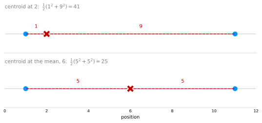
Convergence Guarantee
Because k-means is optimizing a cost function, and every step sets \(c^{(i)}\) and \(\vec{\mu}_k\) so as to reduce it, the algorithm is guaranteed to converge. On every iteration, the distortion should go down or stay the same. It should never go up, so if it ever does, that means there is a bug in the code.
This also gives a practical way to check for convergence. Once the cost function stops going down, once there is a single iteration where it stays the same, k-means has usually converged and can be stopped. In rare cases k-means runs a long time with the distortion decreasing very, very slowly, a bit like gradient descent, and then it is reasonable to decide the algorithm is close enough to convergence and stop rather than spend more compute.
The next section uses the cost function in another way, running k-means from multiple random initializations to find better clusters.
Review Questions
1. Write the k-means cost function and say what \(\vec{\mu}_{c^{(i)}}\) refers to. What is this cost function also called?
TipAnswer
\[J = \frac{1}{m} \sum_{i=1}^{m} \left\lVert \vec{x}^{(i)} - \vec{\mu}_{c^{(i)}} \right\rVert^2\] Here \(\vec{\mu}_{c^{(i)}}\) is the location of the centroid of the cluster that example \(i\) is assigned to, found by looking up \(c^{(i)}\). The cost is the average squared distance from each example to its own centroid, and it is also called the distortion function.
1. The assign step and the move step each minimize \(J\), but over different variables. Which variables does each hold fixed, and which does it optimize?
TipAnswer
The assign step holds the centroids \(\vec{\mu}_1, \dots, \vec{\mu}_K\) fixed and optimizes the assignments \(c^{(1)}, \dots, c^{(m)}\), sending each point to its nearest centroid. The move step holds the assignments fixed and optimizes the centroids, setting each to the mean of its assigned points.
1. Two points sit at positions 1 and 11. Show that a centroid at their mean gives a smaller average squared distance than a centroid at position 2.
TipAnswer
At position 2, the distances are 1 and 9, so the average squared distance is \(\frac{1}{2}(1^2 + 9^2) = \frac{1}{2}(1 + 81) = 41\). At the mean, position 6, the distances are 5 and 5, giving \(\frac{1}{2}(5^2 + 5^2) = \frac{1}{2}(50) = 25\). Since \(25 < 41\), the mean is better, and in fact the mean minimizes the average squared distance, which is why the move step uses it.
1. While running your k-means code, you notice the distortion \(J\) increased from one iteration to the next. What does this tell you?
TipAnswer
There is a bug. Every step of k-means, both assigning points and moving centroids, can only decrease \(J\) or leave it unchanged, so a genuine implementation never lets the distortion rise. An increase is a reliable signal that something in the code is wrong.
Random Initialization
The very first step of k-means is to choose random locations as the initial guesses for the cluster centroids \(\vec{\mu}_1, \dots, \vec{\mu}_K\). How is that random guess actually made, and how can taking several attempts lead to a better set of clusters?
First, when running k-means you should pretty much always choose the number of centroids \(K\) to be less than the number of training examples \(m\). Having \(K > m\) does not make sense, there would not even be enough training examples to have at least one per centroid. In the earlier example, \(K = 2\) and \(m = 30\).
The most common way to initialize is to randomly pick \(K\) training examples and set \(\vec{\mu}_1, \dots, \vec{\mu}_K\) equal to those examples. So for \(K = 2\), pick two training examples at random and place the red and blue centroids right on top of them. (The earlier illustrations put the initial centroids at arbitrary random points rather than on training examples, purely to make the pictures clearer. Initializing on actual training examples is the method used in practice.)
Local Optima
Depending on which random examples get chosen, k-means can end up with different clusterings. Consider a dataset with three visible groups and \(K = 3\). One random initialization might produce a clean clustering, one centroid per group. But an unlucky initialization, say two centroids landing inside one group and one centroid inside another, can leave k-means stuck in a worse clustering. This is a local optimum: k-means is still minimizing the distortion \(J\), but this initialization happened to get trapped at a local minimum rather than the best one.
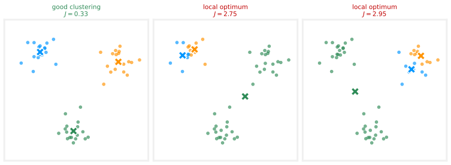
All three of these are results k-means can reach on the same data, just from different random initializations. The good clustering (left) has small squared distances from each centroid to its points, so its distortion \(J\) is small. In the two local optima, one centroid sits far from many of its assigned points, so \(J\) is larger.
Trying Multiple Initializations
This suggests a fix. To give k-means a better chance of finding the good clustering, run it multiple times with different random initializations, then pick the run with the lowest cost function \(J\). Because the good clustering has the smallest distortion, selecting by lowest \(J\) selects it.
NoteMultiple random initializations
For \(i = 1\) to \(100\) (say):
- Randomly initialize k-means (pick \(K\) training examples as the initial centroids).
- Run k-means to convergence, giving assignments \(c^{(1)}, \dots, c^{(m)}\) and centroids \(\vec{\mu}_1, \dots, \vec{\mu}_K\).
- Compute the distortion (cost function) \(J\).
Pick the set of clusters that gave the lowest \(J\).
Running this often gives a much better set of clusters, with a much lower distortion, than running k-means only once. A common number of initializations is somewhere between 50 and 1000. Running many more than 1000 times tends to get computationally expensive with diminishing returns, but trying at least 50 or 100 will often give a much better result than a single shot. In practice it is almost always worth using more than one random initialization.
The last piece of the k-means story is how to choose the number of clusters \(K\), covered next.
Review Questions
1. What is the recommended way to initialize the cluster centroids, and why must \(K < m\)?
TipAnswer
Randomly pick \(K\) distinct training examples and set the initial centroids to their locations. \(K\) must be less than the number of examples \(m\), otherwise there are not enough training examples to place at least one on each centroid.
1. What is a local optimum in the context of k-means, and how does it arise?
TipAnswer
A local optimum is a clustering where k-means has converged, no point changes and no centroid moves, but the distortion \(J\) is higher than the best achievable. It arises from an unlucky random initialization, for example two centroids landing in one group and none in another, which traps the algorithm at a suboptimal local minimum of \(J\).
1. Describe the multiple-random-initializations procedure. How do you choose among the runs?
TipAnswer
Run k-means many times (commonly 50 to 1000), each with a fresh random initialization, running each to convergence and computing its distortion \(J\). Then keep the run with the lowest \(J\). Since lower distortion means tighter clusters, this selects the best clustering found across all the attempts.
1. You run k-means once and get a clustering that looks poor. Your colleague says “k-means is broken.” What is the more likely explanation and fix?
TipAnswer
k-means is not broken, it most likely converged to a local optimum from an unlucky initialization. The fix is to run it several times (say 50 to 100) with different random initializations and keep the result with the lowest distortion \(J\), which usually recovers a much better clustering.
Choosing the Number of Clusters
The k-means algorithm requires, as one of its inputs, \(K\), the number of clusters to find. How do you decide whether you want two clusters, three, five, or ten?
For a lot of clustering problems, the right value of \(K\) is truly ambiguous. Show different people the same dataset and ask how many clusters they see, and some will say two distinct clusters, and they will be right, while others will see four distinct clusters, and they will also be right, and a case can even be made for three. Because clustering is unsupervised, there are no “right answers” in the form of labels to replicate, and the data itself often does not give a clear indicator of how many clusters it contains.
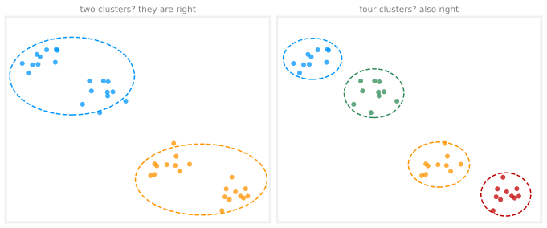
Elbow Method
The academic literature has a few techniques for automatically choosing the number of clusters, and one worth recognizing (because others refer to it) is the elbow method. Run k-means with a variety of values of \(K\) and plot the cost function \(J\), the distortion, as a function of the number of clusters. With very few clusters the distortion is high, and it decreases as \(K\) grows. If the curve decreases rapidly until, say, \(K = 3\) and more slowly after that, the bend is called the elbow, think of the curve as an arm, with the bend as its elbow, and the method says to pick the \(K\) at the elbow.
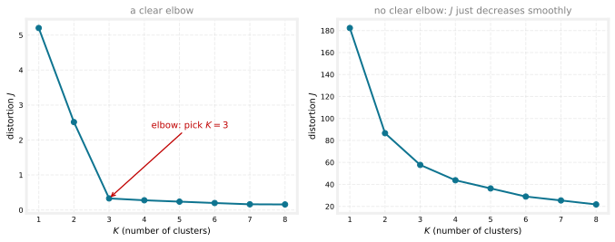
Plotting the cost as a function of \(K\) can help gain some insight, but in practice the method is less useful than it sounds. For a lot of applications the right number of clusters is truly ambiguous, and many cost curves look like the one on the right, decreasing smoothly with no clear elbow to point at. (The left curve above comes from the well-separated three-blob data of the previous section, where the elbow at 3 is real; the right curve comes from the continuous t-shirt data, where there is no bend to find.)
WarningTechnique that does not work
Do not choose \(K\) to minimize the cost function \(J\). More clusters pretty much always reduces \(J\), the more centroids there are, the closer each point sits to one of them, so this rule would almost always just pick the largest possible \(K\).
Evaluating K-means by Its Downstream Purpose
How is \(K\) chosen in practice? Often k-means runs in order to produce clusters for some later, downstream purpose, and the recommendation is to evaluate k-means by how well it serves that purpose. In the t-shirt example, running k-means with \(K = 3\) gives clusters for sizing small, medium, and large, and running it with \(K = 5\) gives extra small through extra large. Both are completely valid groupings. The choice between three or five sizes is a business decision, better fit with five sizes, versus the extra manufacturing and shipping costs of five t-shirt types instead of three, so run both, look at the two solutions, and decide based on that trade-off.
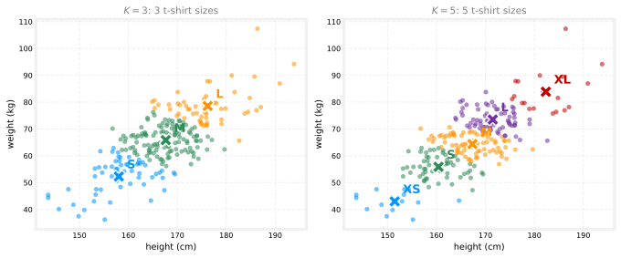
The upcoming k-means lab applies the algorithm to image compression, one of the most fun visual examples of k-means, where the same reasoning appears as a trade-off between the quality of the compressed image and how much space it saves, and the best \(K\) can be decided manually from that trade-off.
That completes the k-means clustering algorithm, and with it, your first unsupervised learning algorithm. The next topic is the second unsupervised learning algorithm of the course, anomaly detection, looking at a dataset and finding unusual or anomalous things in it, another commercially important application of unsupervised learning.
Review Questions
1. Why is the “right” number of clusters often genuinely ambiguous?
TipAnswer
Because clustering is unsupervised, there are no labels providing a right answer to replicate, and the data itself frequently supports multiple readings, the same dataset can reasonably be seen as two clusters or as four. Different people looking at the same points can disagree and both be right.
1. Describe the elbow method and its main limitation.
TipAnswer
Run k-means for a range of \(K\) values, plot the distortion \(J\) against \(K\), and pick the \(K\) at the “elbow,” where the curve stops decreasing rapidly and starts decreasing slowly. The limitation is that many real cost curves decrease smoothly with no clear elbow, leaving nothing to point at, which is why the method often does not settle the question in practice.
1. Why is choosing \(K\) to minimize the cost function \(J\) not a good technique?
TipAnswer
Because increasing \(K\) almost always decreases \(J\), with more centroids, every point ends up closer to some centroid. Minimizing \(J\) over \(K\) would therefore nearly always select the largest possible \(K\), regardless of what grouping actually makes sense for the data or the application.
1. In the t-shirt example, both \(K = 3\) and \(K = 5\) produce valid clusterings. What is the recommended way to choose between them?
TipAnswer
Evaluate k-means by its downstream purpose. Run both, then weigh the trade-off that matters to the business, five sizes fit customers better, but manufacturing and shipping five t-shirt types costs more than three. The right \(K\) is the one that best serves what the clusters will actually be used for, not a property of the data alone.
Lab: K-means and Image Compression
This lab implements the k-means algorithm and then uses it for image compression. It starts with a sample 2D dataset to build intuition, and then reduces the number of colors in an image to only the 16 that best represent it. The two graded functions are exactly the two steps of the algorithm, finding the closest centroids and recomputing the centroid means.
import numpy as np
import matplotlib.pyplot as pltExercise 1: Finding Closest Centroids
In the cluster assignment phase, the algorithm assigns every example \(\vec{x}^{(i)}\) to its closest centroid, given the current centroid positions. The function takes the data matrix X and the centroid locations centroids, and outputs a one-dimensional array idx holding the index of the closest centroid for every example.
NoteIndexing note
In code, the centroid index runs from \(0\) to \(K-1\) rather than the \(1\) to \(K\) of the lectures, because Python list indices start at 0.
For every example, \(c^{(i)} := j\) that minimizes \(\lVert \vec{x}^{(i)} - \vec{\mu}_j \rVert^2\), where \(\vec{\mu}_j\) is the position of the \(j\)’th centroid ( centroids[j] in the code) and the double bars are the L2 norm, computed with np.linalg.norm.
def find_closest_centroids(X, centroids):
"""
Computes the centroid memberships for every example.
Args:
X (ndarray): (m, n) Input values
centroids (ndarray): (K, n) centroids
Returns:
idx (array_like): (m,) closest centroids
"""
K = centroids.shape[0]
idx = np.zeros(X.shape[0], dtype=int)
for i in range(X.shape[0]):
distance = []
for j in range(K):
norm_ij = np.linalg.norm(X[i] - centroids[j])
distance.append(norm_ij)
idx[i] = np.argmin(distance)
return idxCheck the implementation on an example dataset (download) with three hand-placed centroids.
X = np.load("../../media/ex7_X.npy")
print("First five elements of X are:\n", X[:5])
print("The shape of X is:", X.shape)
# Select an initial set of centroids (3 Centroids)
initial_centroids = np.array([[3, 3], [6, 2], [8, 5]])
# Find closest centroids using initial_centroids
idx = find_closest_centroids(X, initial_centroids)
# Print closest centroids for the first three elements
print("First three elements in idx are:", idx[:3])First five elements of X are:
[[1.84207953 4.6075716 ]
[5.65858312 4.79996405]
[6.35257892 3.2908545 ]
[2.90401653 4.61220411]
[3.23197916 4.93989405]]
The shape of X is: (300, 2)
First three elements in idx are: [0 2 1]The expected output is [0 2 1], the first example is closest to centroid 0, the second to centroid 2, and the third to centroid 1.
Exercise 2: Computing Centroid Means
Given the assignments, the second phase recomputes, for each centroid, the mean of the points assigned to it,
\[ \vec{\mu}_k = \frac{1}{|C_k|} \sum_{i \in C_k} \vec{x}^{(i)} \]
where \(C_k\) is the set of examples assigned to centroid \(k\) and \(|C_k|\) is how many there are. Concretely, if examples \(\vec{x}^{(3)}\) and \(\vec{x}^{(5)}\) are assigned to centroid \(k = 2\), then \(\vec{\mu}_2 = \frac{1}{2}\left(\vec{x}^{(3)} + \vec{x}^{(5)}\right)\).
def compute_centroids(X, idx, K):
"""
Returns the new centroids by computing the means of the
data points assigned to each centroid.
Args:
X (ndarray): (m, n) Data points
idx (ndarray): (m,) Array containing index of the closest centroid
for each example in X
K (int): number of centroids
Returns:
centroids (ndarray): (K, n) New centroids computed
"""
m, n = X.shape
centroids = np.zeros((K, n))
for k in range(K):
points = X[idx == k]
centroids[k] = np.mean(points, axis=0)
return centroids
K = 3
centroids = compute_centroids(X, idx, K)
print("The centroids are:", centroids)The centroids are: [[2.42830111 3.15792418]
[5.81350331 2.63365645]
[7.11938687 3.6166844 ]]The handy trick here is X[idx == k], which selects exactly the rows of X whose assignment equals k, and np.mean(..., axis=0) averages them feature by feature.
K-means on a Sample Dataset
With the two functions complete, run_kMeans calls them in a loop, exactly the pseudocode of the algorithm. The visualization helpers below draw each iteration’s assignments and the centroids’ movement trails; they are presentation code only.
def run_kMeans(X, initial_centroids, max_iters=10, plot_progress=False):
"""
Runs the K-Means algorithm on data matrix X, where each row of X
is a single example.
"""
m, n = X.shape
K = initial_centroids.shape[0]
centroids = initial_centroids
previous_centroids = centroids
idx = np.zeros(m)
if plot_progress:
plt.figure(figsize=(8, 6))
for i in range(max_iters):
print("K-Means iteration %d/%d" % (i, max_iters - 1))
# For each example in X, assign it to the closest centroid
idx = find_closest_centroids(X, centroids)
if plot_progress:
plot_progress_kMeans(X, centroids, previous_centroids, idx, K, i)
previous_centroids = centroids
# Given the memberships, compute new centroids
centroids = compute_centroids(X, idx, K)
if plot_progress:
plt.show()
return centroids, idx
NotePlotting helpers
from matplotlib.colors import ListedColormap
def draw_line(p1, p2, style="-k", linewidth=1):
plt.plot([p1[0], p2[0]], [p1[1], p2[1]], style, linewidth=linewidth)
def plot_data_points(X, idx):
cmap = ListedColormap(["red", "green", "blue"])
c = cmap(idx)
plt.scatter(X[:, 0], X[:, 1], facecolors="none", edgecolors=c,
linewidth=0.5, alpha=0.7)
def plot_progress_kMeans(X, centroids, previous_centroids, idx, K, i):
plot_data_points(X, idx)
plt.scatter(centroids[:, 0], centroids[:, 1], marker="x", c="k", linewidths=3)
for j in range(centroids.shape[0]):
draw_line(centroids[j, :], previous_centroids[j, :])
plt.title("Iteration number %d" % i)
def plot_kMeans_RGB(X, centroids, idx, K):
fig = plt.figure(figsize=(7, 7))
ax = fig.add_subplot(111, projection="3d")
ax.scatter(*X.T * 255, zdir="z", depthshade=False, s=0.3, c=X)
ax.scatter(*centroids.T * 255, zdir="z", depthshade=False, s=500,
c="red", marker="x", lw=3)
ax.set_xlabel("R value - Redness")
ax.set_ylabel("G value - Greenness")
ax.set_zlabel("B value - Blueness")
ax.set_title("Original colors and their color clusters' centroids")
plt.show()
def show_centroid_colors(centroids):
palette = np.expand_dims(centroids, axis=0)
num = np.arange(0, len(centroids))
plt.figure(figsize=(10, 1.6))
plt.xticks(num)
plt.yticks([])
plt.imshow(palette)
plt.show()# Set initial centroids and number of iterations
initial_centroids = np.array([[3, 3], [6, 2], [8, 5]])
max_iters = 10
# Run K-Means
centroids, idx = run_kMeans(X, initial_centroids, max_iters, plot_progress=True)K-Means iteration 0/9
K-Means iteration 1/9
K-Means iteration 2/9
K-Means iteration 3/9
K-Means iteration 4/9
K-Means iteration 5/9
K-Means iteration 6/9
K-Means iteration 7/9
K-Means iteration 8/9
K-Means iteration 9/9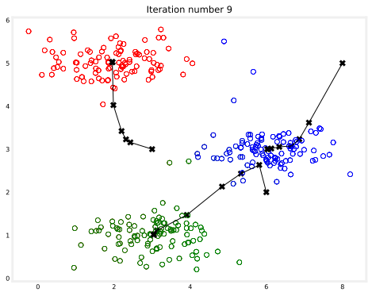
The final centroids are the black X marks in the middle of the colored clusters, and the connected X marks trace how each centroid traveled to get there, the assign-and-move dance drawn all at once.
Random Initialization in Code
The initial centroids above were hand-placed so the figure comes out the same every time. In practice, the strategy from the random initialization section applies, select random examples from the training set. The function below first shuffles the indices of the examples with np.random.permutation(), then takes the first \(K\), which selects examples at random without any risk of picking the same one twice.
def kMeans_init_centroids(X, K):
"""
This function initializes K centroids to be used with
K-Means on the dataset X.
Args:
X (ndarray): Data points
K (int): number of centroids/clusters
Returns:
centroids (ndarray): Initialized centroids
"""
# Randomly reorder the indices of examples
randidx = np.random.permutation(X.shape[0])
# Take the first K examples as centroids
centroids = X[randidx[:K]]
return centroids
np.random.seed(7)
K = 3
initial_centroids = kMeans_init_centroids(X, K)
centroids, idx = run_kMeans(X, initial_centroids, max_iters, plot_progress=True)K-Means iteration 0/9
K-Means iteration 1/9
K-Means iteration 2/9
K-Means iteration 3/9
K-Means iteration 4/9
K-Means iteration 5/9
K-Means iteration 6/9
K-Means iteration 7/9
K-Means iteration 8/9
K-Means iteration 9/9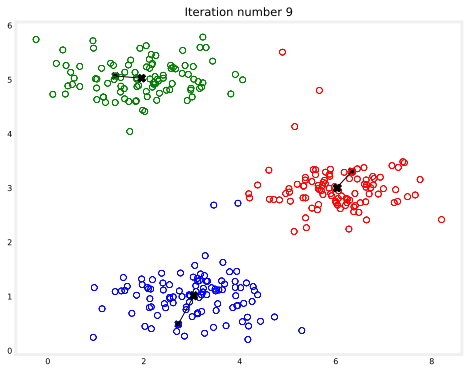
Running this cell repeatedly (with different seeds) produces different clusterings depending on the initial points chosen, exactly the local-optima behavior discussed earlier.
Image Compression with K-means
Now the payoff. In a straightforward 24-bit color representation of an image, each pixel is three 8-bit unsigned integers (0 to 255) specifying the red, green, and blue intensity values, the RGB encoding. The image here (download) contains thousands of colors, and k-means will reduce them to just 16, by treating every pixel as a data example in 3-dimensional RGB space and finding the 16 colors that best cluster the pixels.
{kind=link}
original_img = plt.imread("../../media/bird_small.png")
plt.imshow(original_img)
plt.axis("off")
plt.show()
print("Shape of original_img is:", original_img.shape)Shape of original_img is: (128, 128, 3)The image is a three-dimensional matrix, the first two indices identify a pixel position and the third is red, green, or blue, so original_img[50, 33, 2] is the blue intensity of the pixel at row 50, column 33. To run k-means, reshape it into an \(m \times 3\) matrix of pixel colors, where \(m = 128 \times 128 = 16384\). (PNG files load with values already in the 0 to 1 range; a JPG would need dividing by 255 first.)
# Reshape the image into an m x 3 matrix where m = number of pixels
# Each row contains the Red, Green and Blue pixel values
X_img = np.reshape(original_img, (original_img.shape[0] * original_img.shape[1], 3))
print("Shape of X_img:", X_img.shape)Shape of X_img: (16384, 3)Run k-means on the pixel data with \(K = 16\). This is the same run_kMeans as before, just with 16,384 examples in 3 dimensions instead of 300 examples in 2.
K = 16
max_iters = 10
np.random.seed(3)
initial_centroids = kMeans_init_centroids(X_img, K)
centroids, idx = run_kMeans(X_img, initial_centroids, max_iters)
print("Shape of idx:", idx.shape)
print("Closest centroid for the first five elements:", idx[:5])K-Means iteration 0/9
K-Means iteration 1/9
K-Means iteration 2/9
K-Means iteration 3/9
K-Means iteration 4/9
K-Means iteration 5/9
K-Means iteration 6/9
K-Means iteration 7/9
K-Means iteration 8/9
K-Means iteration 9/9
Shape of idx: (16384,)
Closest centroid for the first five elements: [11 9 9 9 11]Every color in the original image is a dot in 3D RGB space, and the red X marks are the 16 centroids k-means found, the 16 colors that will represent the compressed image.
plot_kMeans_RGB(X_img, centroids, idx, K)
show_centroid_colors(centroids)
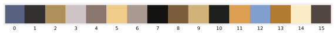
Compressing the Image
With the 16 colors chosen, assign each pixel to its closest centroid and replace it with that centroid’s color. This is where the compression happens.
- The original image needs 24 bits (8 bits for each of the three channels) per pixel, \(128 \times 128 \times 24 = 393{,}216\) bits in total.
- The compressed representation stores a small dictionary of 16 colors at 24 bits each, and then only 4 bits per pixel (enough to index 16 possibilities), \(16 \times 24 + 128 \times 128 \times 4 = 65{,}920\) bits.
That compresses the image by about a factor of 6.
# Find the closest centroid of each pixel
idx = find_closest_centroids(X_img, centroids)
# Replace each pixel with the color of the closest centroid
X_recovered = centroids[idx, :]
# Reshape image into proper dimensions
X_recovered = np.reshape(X_recovered, original_img.shape)
fig, ax = plt.subplots(1, 2, figsize=(9, 5))
ax[0].imshow(original_img)
ax[0].set_title("Original")
ax[0].set_axis_off()
ax[1].imshow(X_recovered)
ax[1].set_title("Compressed with %d colours" % K)
ax[1].set_axis_off()
plt.show()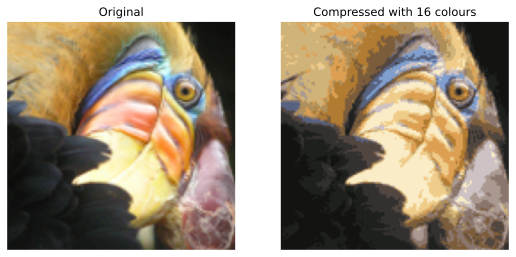
The reconstruction retains most of the characteristics of the original, with some visible compression artifacts from using fewer colors. This is also where the choosing \(K\) discussion becomes concrete, a larger \(K\) gives a better-looking image but a bigger file, and the right trade-off is a judgment call, not something the data decides for you.
Review Questions
1. In the code, idx[i] ranges from 0 to \(K-1\), but the lectures wrote \(c^{(i)}\) as ranging from 1 to \(K\). Why the difference?
TipAnswer
Python list and array indices start at 0, so the code labels the centroids 0 through \(K-1\). It is purely a bookkeeping convention, the algorithm is identical, and idx[i] plays exactly the role of \(c^{(i)}\).
1. kMeans_init_centroids shuffles the example indices with a permutation and takes the first \(K\). How does this differ from sampling with replacement, and why is that the right choice here?
TipAnswer
A permutation cannot repeat an index, so the \(K\) chosen examples are guaranteed distinct, whereas sampling with replacement could pick the same example twice. For centroid initialization, duplicates would be harmful, two centroids starting at the identical point, so selecting without replacement is exactly what is wanted. (Sampling with replacement has its own separate role, generating training sets for tree ensembles.)
1. Walk through the compression arithmetic. Where does the factor of about 6 come from?
TipAnswer
The original stores 24 bits per pixel: \(128 \times 128 \times 24 = 393{,}216\) bits. The compressed version stores a 16-color dictionary (\(16 \times 24 = 384\) bits) plus a 4-bit color index per pixel (\(128 \times 128 \times 4 = 65{,}536\) bits), totaling \(65{,}920\) bits. The ratio \(393{,}216 / 65{,}920 \approx 6\) is the compression factor.
1. In the image compression setting, what plays the role of a “training example,” and what do the 16 cluster centroids represent?
TipAnswer
Each pixel is a training example, a point in 3-dimensional RGB space with its red, green, and blue values as features. The 16 centroids are the 16 representative colors that best cluster all the pixel colors, and compression replaces every pixel with its cluster’s centroid color.